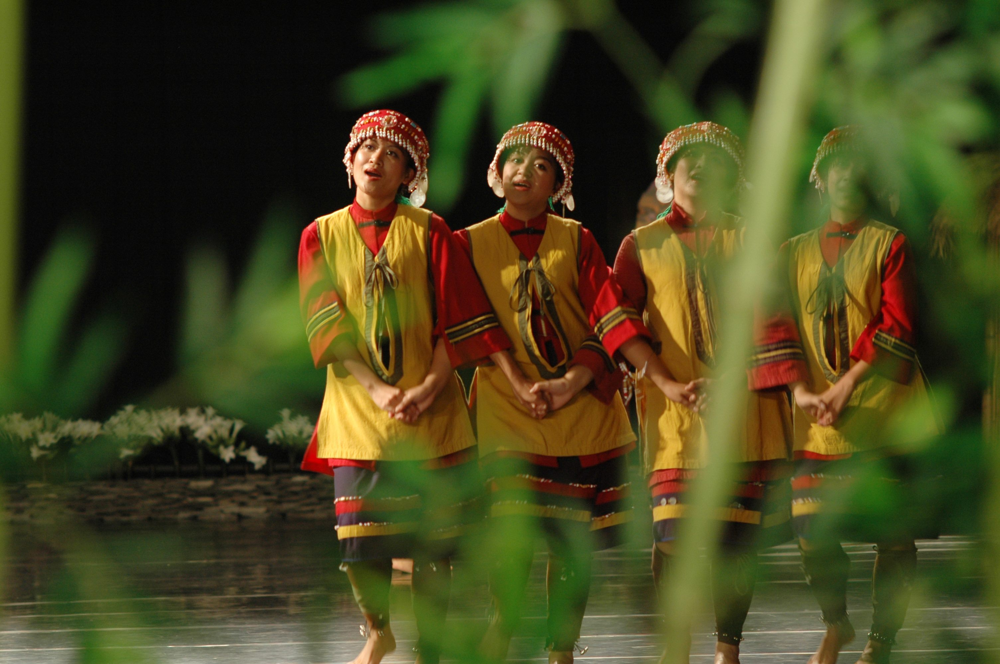
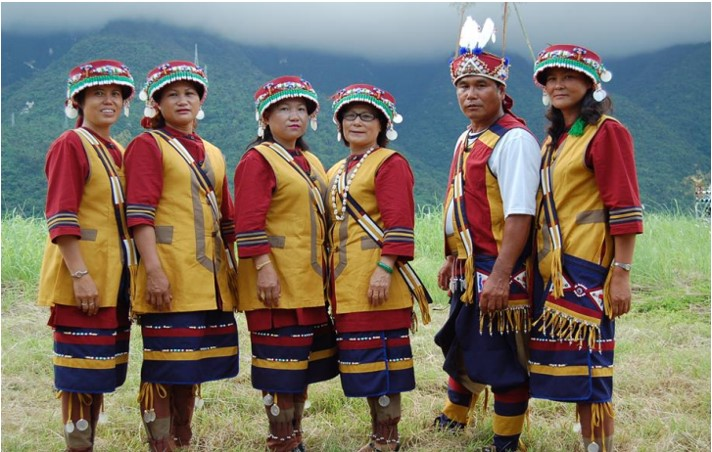

族群介紹
撒奇萊雅族主要分布在花蓮縣，族人長期以農耕、漁撈與採集維生。 在歷史上曾因太魯閣事件而被視為阿美族的一部分，但族人始終以自身文化、 語言與祭儀維繫族群認同，並於 2007 年正式獲認定為台灣原住民族之一。
撒奇萊雅族的祭儀、傳統服飾與家族組織，都反映出族人與土地、海洋及 祖靈之間的深厚連結。透過歌謠、故事與祭典，族群歷史與信仰得以代代相傳。
地理位置
撒奇萊雅族主要聚居在花蓮吉安、北埔等地區，接近海岸平原與市區， 形成兼具傳統文化與現代生活的族群空間。
景點特色
以下為與撒奇萊雅族相關的地點與文化特色：
| 地點名稱 | 地區 | 特色說明 |
|---|---|---|
| 花蓮吉安一帶部落 | 花蓮縣吉安鄉 | 撒奇萊雅族的重要聚落區域，保存祭儀、語言與歌謠， 是認識族群文化的核心空間。 |
| 北埔與周邊地區 | 花蓮市近郊 | 結合城市與部落生活的區域，展現現代觀光與傳統文化交織的樣貌。 |
飲食文化
撒奇萊雅族的飲食多運用海產、農作物與野菜，體現靠海與平原生活的特色：
| 食物名稱 | 主要材料 | 文化說明 |
|---|---|---|
| 魚類與海鮮料理 | 各類魚、貝類 | 族人長期於海岸生活，魚類與海鮮是重要食材，常搭配地方調味方式烹調。 |
| 地瓜、芋頭等根莖作物料理 | 地瓜、芋頭、蔬菜 | 農耕文化下常見的主食與配菜，兼具飽足與在地特色。 |
照片與影片介紹
部落與祭典照片
 以上為撒奇萊雅族的衣著特色。
影片介紹
以上為撒奇萊雅族相關介紹影片。